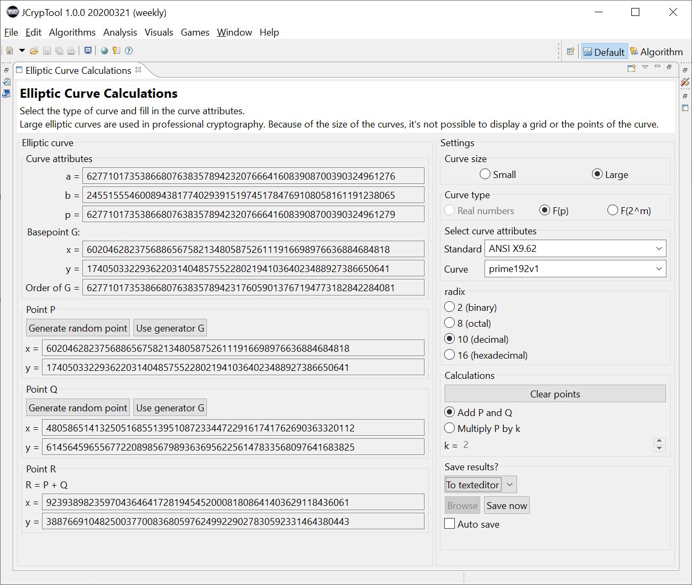

This demonstration shows the basic operations on elliptic curves in cryptography. After selecting the curve type you can perform calculations with the points of the curve.
The first choice is the curve size: small or large.
a) For a first educational visualization choose small. Here a grid is displayed and you can choose the points on the curve with the mouse. There are three types of elliptic curves you can choose from:

b) Choosing the curve size large offers different standard curves (each in different variants): ANSI X9.62, SEC 2, ECC Brainpool, and CDC Group for the discrete curve type \(\mathbb{F}_p\); and ANSI X9.62 for the discrete curve type \(\mathbb{F}_{2^m}\).
Such large elliptic curves are used in professional cryptographic applications. Like in the case of the small size, you can add points and multiply points with a scalar.

The results of the calculations (for both small and large sizes) can be saved and either looked at in the JCT editor or stored into a file.
The following sections show concrete samples for the three types of elliptic curves.
An elliptic curve in real number space has the form of \(y^2 = x^3 + a \times x + b\) where \(a\), \(b\), \(x\), and \(y\) are real numbers.
In the real number space, there are infinitely many points on the curve. For every point on the curve there is a negative value where \(y = -y\) (except for \(y = 0\)).
Two points on a curve can be "added up". This is to be understood as a geometric operation quite differently from what we are used to with numbers. Adding two points on an elliptic curve results in a third point. We call this result \(R\). The scheme of the "addition" looks like the following and is also depicted in figure a.
Note: There is an exception: If \(P = -Q\) the line does not cross the curve a third time, because it runs in parallel to the y axis. In this case the result of the addition is a remote point called \(O\) (also denoted as "point in infinity" \(\infty\)).
There are three simple formulas for point addition on elliptic curves. These are: \begin{alignat}{1} & m &= \frac{Q_y - Q_y}{Q_x - P_x}\\ & R_x &= s^2 - P_x - Q_x\\ & R_y &= − P_y + s(P_x − R_x) \end{alignat}
\(m\) is the slope of the straight line through \(P\), \(Q\) and point \(R\) which we are looking for. The formulas can be deduced by intersecting the straight line with the elliptic curve. This leads to a cubic equation. Because 2 of the maximum 3 intersections are already known, the formulas can be deduced from Vieta's formulas.
Example with the points from figure a: Given are:
Definition of the exception \(P = -Q\):
In this case the result is the point in infinity \(O\). It is sometimes also denoted as \(\infty\).
Points can not only be added. There is also an operation equivalent to multiplication. Just as with real numbers, multiplication is just repeated addition with the same number. For example \(2 \times 3\) is the same as \(2 + 2 + 2\).
On elliptic curves we can multiply points by adding them up. For this to work we also need to be able to add points with themselves (to double them). For this operation the calculation is slightly different. In the normal addition we could calculate \(m\) as simple difference between two points. This would lead to a division by zero for a single point. Instead we calculate a tangent for that point. (we differentiate, see also figure c).
$$m = \frac{3x^2 + a}{2y}$$Besides the point coordinates \(x\) and \(y\) the parameter \(a\) of the elliptic curve is needed. The tangent's intersection can be used in the same equations as the line from the normal addition.
\begin{alignat}{1} & R_x &= m^2 - 2x\\ & R_y &= − y + m(x − R_x) \end{alignat}Example with the points from figure c:
Given are:
A curve over the discrete field \(\mathbb{F}_p\) can be described through the equation \(y^2 = x^3 + ax + b \quad(\textrm{mod}\, p)\). \(a\) and \(b\) are again real number parameters of the elliptic curve.
Each point \(x, y\) is element of the group of points in \(\mathbb{F}_p\) where \(p\) is a prime number. The points in this field are finite. There are a maximum of \(p^2\) points on the curve. But not every coordinate is a valid point on the curve equation. Hasse's theorem on elliptic curves gives us insight on how many valid points we will find for such a curve. In simplified terms there are always as many points on the curve as the magnitude of \(p\).
The form of the elliptic curve is not recognizeable anymore. This type of modulo calculated curve is way more interesting for cryptography. For real numbers a point can be easily estimated if there are known points nearby. For finite fields points contain no information about their neighbours.
The calculation of points is very similar to curves with real numbers. The main difference is, that each intermediate result has to be calculated modulo \(p\). This leads to an additional step for the calculation of \(m\). Because divisions are not allowed in modular arithmetic, we have to multiply with the modulo inverse instead. The euclidean algorithm is needed to calculate the modulo inverse.
\begin{alignat}{1} & m &= (Q_y - P_y) \cdot (Q_x - P_x)^{-1} &&\mod p\\ & R_x &= m^2 - P_x - Q_x &&\mod p\\ & R_y &= − P_y + m(P_x − R_x) &&\mod p \end{alignat}
Definition of the exception \(P = -Q\):
Just as for curves with real numbers: The result is the point in infinity \(O\) (also denoted as \(\infty\)).
Example of point addition over a finite field \(\mathbb{F}_p\):
This example is depicted in figure d). There are 841 \(p^2\) possible coordinates for \(\mathbb{F}_{29}\), 36 of these are actually valid coordinates:
| \(O\) | ( 8| 1) | (17| 2) | (22| 3) |
| ( 1| 1) | ( 8|28) | (17|27) | (22|26) |
| ( 1|28) | ( 9| 0) | (18| 3) | (23|11) |
| ( 2|14) | (10|13) | (18|26) | (23|18) |
| ( 2|15) | (10|16) | (19| 8) | (24| 9) |
| ( 5| 6) | (13| 4) | (19|21) | (24|20) |
| ( 5|23) | (13|25) | (20| 1) | (26| 2) |
| ( 6| 5) | (15| 2) | (20|28) | (26|27) |
| ( 6|24) | (15|27) | (21| 0) | (28| 0) |
We seek \(R = P + Q\):
The concepts of the real numberes can be applied the same way. We multiply through repeated addition. If one wants to calculate \(3 \times P\) this can be done by calculating \(2 \times P + P\). For this to be possible we again have to define a point addition with itself - a point doubling. As for the real numbers this formula is slightly different then the point addition with two different points. Just as for the addition we have to calculate the modulo inverse instead of a plain division. The three formulas for point doubling are:
\begin{alignat}{1} & m &= (3x^2 + a) \cdot (2y)^{-1} &&\mod p\\ & R_x &= m^2 - 2x &&\mod p\\ & R_y &= − y + m(x − R_x) &&\mod p \end{alignat}
Example of point doubling over a finite field \(\mathbb{F}_{29}\):
Given are:
We seek \(R = 2 \cdot P\):
Elements of galois fields \(\mathbb{F}_{2^m}\) are polynomials of length \(m\). For these groups all coefficients are calculated modulo 2 (living in the numbers \(\mathbb{Z}_2\)). That allows very fast computation for the following reasons: An exmample polynomial of length \(8\): \(x^8 + x^4 + x^3+x+1\) can also be written as vector respectively as simple bits: \(10011011\) Present terms are noted as 1, the others as 0. Negative values or values greater than 1 are not allowed in modulo 2. This representation allows addition as well as subtraction to be simple bitwise XOR operations. Multiplication can be done by only using multiple left shift and XOR operations. All of these bit operators can be calculated very fast on computers. The usual rules for working with polynomials apply.
The elliptic curve looks sligthly different when working with polynomials \(y^2 + xy = x^3 + ax^2 + b\).
In addition the following (public) parameters are reqiured:
Following rules and definitions apply:
In order to understand calculations over \(\mathbb{F}_{2^m}\), the basic math operations shall be explained by examples.
Addition (simple bitwise XOR, also called "carryless addition")
| Polynomial | Bitstring | |
|---|---|---|
| \begin{alignat}{1} p\\[3pt] q \end{alignat} | \begin{alignat}{1} x^8 + &&x^4 + x^2 +& 1\\ &&x^4 + x +& 1 \end{alignat} | \begin{align*} 100010101\\[3pt] 000010011 \end{align*} |
| \(p + q\) | \(x^8 + x^2 + x\) | \(100000110\) |
Subtraction
Die Subtraction is exactly the same operation as the addition, a bitwise XOR.
Multiplication
At first we take a look at multiplication with single term polynomials (monom) of form \(x^k\).
By the example you can see, that this form of multiplication via \(x^k\) is a left shift of \(k\) bits.
| Polynomial | Bitstring |
|---|---|
| \((x^8 + x^4 + x^2 + 1) \cdot x\) | \(100010101 \cdot 10\) |
| \((x^9 + x^5 + x^3 + x)\) | \(1000101010\) |
| Polynom | Bitfolge |
|---|---|
| \((x^8 + x^4 + x^2 + 1) \cdot x^4\) | \(100010101 \cdot 10000\) |
| \((x^{12} + x^8 + x^6 + x^4)\) | \(1000101010000\) |
The multiplication of two polynomials is a result of the distributive law.
This is the well-known principle from school, that every term must be multiplied with each other term.
This can look like \((a + b) \cdot (x + y) = ax + ay + bx +by\).
Note however, that terms with even coefficients are zero, because even numbers modulo 2 result in zero (\(4x^8 \mod 2 = 0x^8\)).
If you look at the multiplication from a bit point of view: for each 1 in the multiplicative polynomial the other one is shifted left for the power of that term.
Each shift is written below, being shifted 1 to the right by default.
In the end each term written below is XORed for the final result of the multiplication.
| Polynomial | Bitstring |
|---|---|
| \begin{alignat}{1} (x^8 && + x^4 + x^2 + 1) \cdot (x^4 + x &+ 1) =\\ &&(x^8 + x^4 + x^2 + 1) \cdot x^4 &+ \\ &&(x^8 + x^4 + x^2 + 1) \cdot x &+ \\ &&(x^8 + x^4 + x^2 + 1) \cdot 1 \end{alignat} | \begin{alignat}{1} 100010101 \cdot 100&&11\\ \hline 100010101 \textcolor{gray}{0 0 0 0} &&\\ 100010101 \textcolor{gray}{0}&&\\ 100010101 &&\\ \hline 1001001101111 && \end{alignat} |
| \((x^{12} + x^9 + x^6 + x^5 + x^3 + x^2 + x + 1)\) | \(1001001101111\) |
Division
The Division with remainder is done by applying normal polynomial division rules.
Even terms are eliminated,because even numbers modulo 2 result in 0
A division works as follows:
| Polynomial | Bitstring |
|---|---|
| \begin{alignat}{6} & (&& x^8 && + && x^4 + && \, x^2 &&+ &&1)\:/\:(x^4 + x + 1) = x^4 + x \\ \hline -& (&&\textcolor{gray}{x^8 +} && \textcolor{gray}{x^5 +}&&\textcolor{gray}{x^4})&& && &&\\ & && &&x^5 && + && x^2 && &&\\ & && -(&&\textcolor{gray}{x^5} && + && \textcolor{gray}{x^2 +} &&\textcolor{gray}{x})&&\\ & && && && && && x + && 1 \quad \textrm{Remainder}\\ \end{alignat} | \begin{alignat}{1} &100010101 / 10011 = 10010\\[3pt] \hline -(&\textcolor{gray}{10011})&&\\ &00010010&&\\ &-(\textcolor{gray}{10011})&&\\ & \quad\ \ 000011 \quad \textrm{Remainder} \end{alignat} |
Greatest common divisor (gcd)
The greatest common divisor can be calculated with the euclidean algorithm, just as for numbers.
This operation is required, when calculating the modulo inverse for division operations.
When adding ponts for curves over \(\mathbb{F}_{2^m}\) it is similar to the other modes. Instead of calculating modulo \(p\) you use the polynomial \(\f(x)). We have to use the modulo inverse instead of a plain division. The three formulas are:
\begin{alignat}{1} & m &= (Q_y + P_y) \cdot (Q_x + P_x)^{-1} &&\mod f(x)\\ & R_x &= m^2 + k + P_x + Q_x + a &&\mod f(x)\\ & R_y &= m(P_x + R_y) + R_x + P_y &&\mod f(x) \end{alignat}For more information about elliptic curves see:
[HMV04]
Hankerson, Darrel, Menezes, Alfred J., and Vanstone, Scott: Guide to Elliptic Curve Cryptography, Springer, 2004
[Wikipedia_EC]
Elliptic curves, http://en.wikipedia.org/wiki/Elliptic_curves
[Wikipedia_ECC]
Elliptic-curve cryptography, https://en.wikipedia.org/wiki/Elliptic-curve_cryptography